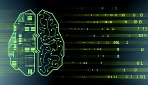

Machine learning (ML) is the study of computer algorithms that improve automatically through experience. It is seen as a subset of artificial intelligence. Machine learning algorithms build a model based on sample data, known as "training data", in order to make predictions or decisions without being explicitly programmed to do so.Machine learning algorithms are used in a wide variety of applications, such as email filtering and computer vision, where it is difficult or unfeasible to develop conventional algorithms to perform the needed tasks.

A subset of machine learning is closely related to computational statistics, which focuses on making predictions using computers; but not all machine learning is statistical learning. The study of mathematical optimization delivers methods, theory and application domains to the field of machine learning. Data mining is a related field of study, focusing on exploratory data analysis through unsupervised learning. In its application across business problems, machine learning is also referred to as predictive analytics.
Machine learning involves computers discovering how they can perform tasks without being explicitly programmed to do so. It involves computers learning from data provided so that they carry out certain tasks. For simple tasks assigned to computers, it is possible to program algorithms telling the machine how to execute all steps required to solve the problem at hand; on the computer's part, no learning is needed. For more advanced tasks, it can be challenging for a human to manually create the needed algorithms. In practice, it can turn out to be more effective to help the machine develop its own algorithm, rather than having human programmers specify every needed step.
The discipline of machine learning employs various approaches to teach computers to accomplish tasks where no fully satisfactory algorithm is available. In cases where vast numbers of potential answers exist, one approach is to label some of the correct answers as valid. This can then be used as training data for the computer to improve the algorithm(s) it uses to determine correct answers. For example, to train a system for the task of digital character recognition, the MNIST dataset of handwritten digits has often been used.
Machine learning approaches are traditionally divided into three broad categories, depending on the nature of the "signal" or "feedback" available to the learning system:
 Supervised learning: The computer is presented with example inputs and their desired outputs, given by a "teacher", and the goal is to learn a general rule that maps inputs to outputs.
Unsupervised learning: No labels are given to the learning algorithm, leaving it on its own to find structure in its input. Unsupervised learning can be a goal in itself (discovering hidden patterns in data) or a means towards an end (feature learning).
Reinforcement learning: A computer program interacts with a dynamic environment in which it must perform a certain goal (such as driving a vehicle or playing a game against an opponent). As it navigates its problem space, the program is provided feedback that's analogous to rewards, which it tries to maximize.
Other approaches have been developed which don't fit neatly into this three-fold categorisation, and sometimes more than one is used by the same machine learning system. For example topic modeling, dimensionality reduction or meta learning.
As of 2020, deep learning has become the dominant approach for much ongoing work in the field of machine learning.
Supervised learning: The computer is presented with example inputs and their desired outputs, given by a "teacher", and the goal is to learn a general rule that maps inputs to outputs.
Unsupervised learning: No labels are given to the learning algorithm, leaving it on its own to find structure in its input. Unsupervised learning can be a goal in itself (discovering hidden patterns in data) or a means towards an end (feature learning).
Reinforcement learning: A computer program interacts with a dynamic environment in which it must perform a certain goal (such as driving a vehicle or playing a game against an opponent). As it navigates its problem space, the program is provided feedback that's analogous to rewards, which it tries to maximize.
Other approaches have been developed which don't fit neatly into this three-fold categorisation, and sometimes more than one is used by the same machine learning system. For example topic modeling, dimensionality reduction or meta learning.
As of 2020, deep learning has become the dominant approach for much ongoing work in the field of machine learning.
For Further Information
Please Visit
the article by Tech Target